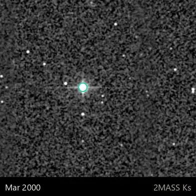

Über ein Vierteljahrhundert
Wolf 359
Ein kleiner Roter Zwerg in 7,9 Lichtjahren Entfernung, einer der nächsten Nachbarn der Sonne und ein Flarestern.

Von 2MASS im März 2000 bis SPHEREx im Mai 2026 wandert Wolf 359 durch das Feld. Chronosphere misst seine Bewegung aus diesen 27 Bildern: 4,72 Bogensekunden im Jahr; der Katalog gibt 4,72 an. In den Besuchen von WISE und NEOWISE findet die Seite Wolf 359 auch von selbst, ohne dass man ihr sagt, wo sie suchen soll.
Quellen: 2MASS · WISE, NEOWISE · SPHEREx, NASA/JPL-Caltech, IRSA · SIMBAD · Wikipedia